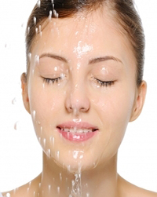

Face Cleansing

1. Take 1 tablespoon of un-boiled milk, dip a small pad of cotton wool in this and rub on the face gently. Use circular movements, use upward strokes on the neck area. Leave this on for 15 minutes. Wash with cold water.
2. Take a thick slice of cucumber. Don't peel the slice, rub in a circular motion all over the face and neck areas. Wash after 15 minutes.
3. Halve a tomato, gently rub over face and neck and wash after 15 minutes.
4. Take the half of a lime peel, from which the juice has been extracted, rub this firmly on the face and the neck. Using a Scrub-(once in 3-4 days).
5. Oily Skin: If the face is oily, use green gram powder or rice flour mixed with curds instead.
6. Diluted buttermilk dabbed on the face and left for 15 minutes, gently wipe with moist cotton wool before applying make-up.
7. Rub the face well with an ice cube.
8. Slice an Apple into thin slices. Place these on the face and leave for 15 minutes. These soak up the extra oil and help to close pores.